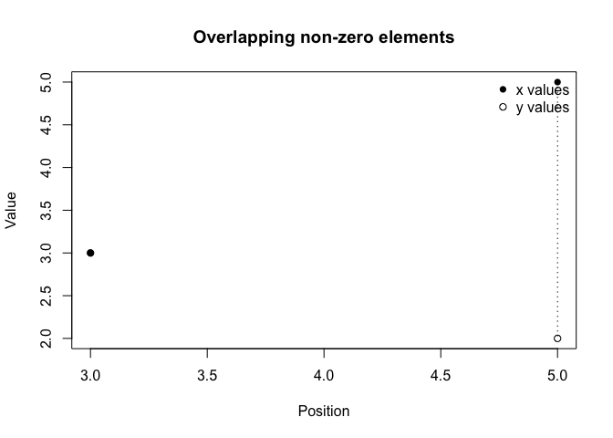

The sparseNumeric package implements an S4 class sparse_numeric that stores only the non-zero entries of a numeric vector along with their positions, while tracking the full length of the vector. This representation is useful for working with sparse numeric data efficiently.
The package provides:
- the sparse_numeric S4 class and validity checks
- coercion to and from base R numeric
- arithmetic operations (+, -, *) via sparse_add, sparse_sub,sparse_mult, and sparse_crossprod
- methods for mean(), L2 norm(), and standardize()
- custom show() and plot() methods for sparse vectors
Installation
You can install the development version of sparseNumeric like so:
From a local clone of the repository:
# in the sparseNumeric project directory
# devtools::install()Once the repository is on GitHub, you can install with:
# install.packages("devtools")
# devtools::install_github("santhoshipen/sparseNumeric")Example
This is a basic example which shows you how to solve a common problem:
Load the package:
library(sparseNumeric)
#>
#> Attaching package: 'sparseNumeric'
#> The following object is masked from 'package:base':
#>
#> norm
## basic example code
# Create a sparse_numeric object
x_dense <- c(0, 0, 3, 0, 5)
x <- as(x_dense, "sparse_numeric")
x
#> Sparse numeric (length5)
#> Non-zero elements: 2
#> Positions: 3, 5
#> Values: 3, 5
# Mean
mean(x)
#> [1] 1.6
# L2 Norm
norm(x)
#> [1] 5.830952
# Standardization
standardize(x)
#> [1] -0.6949956 -0.6949956 0.6081211 -0.6949956 1.4768656
# Arithmetic with another sparse vector
y_dense <- c(1, 0, 3, 0, 2)
y <- as(y_dense, "sparse_numeric")
as(x + y, "numeric")
#> [1] 1 0 6 0 7
as(x - y, "numeric")
#> [1] -1 0 0 0 3
as(x * y, "numeric")
#> [1] 0 0 9 0 10
# Plot overlapping non-zero positions
plot(x, y)